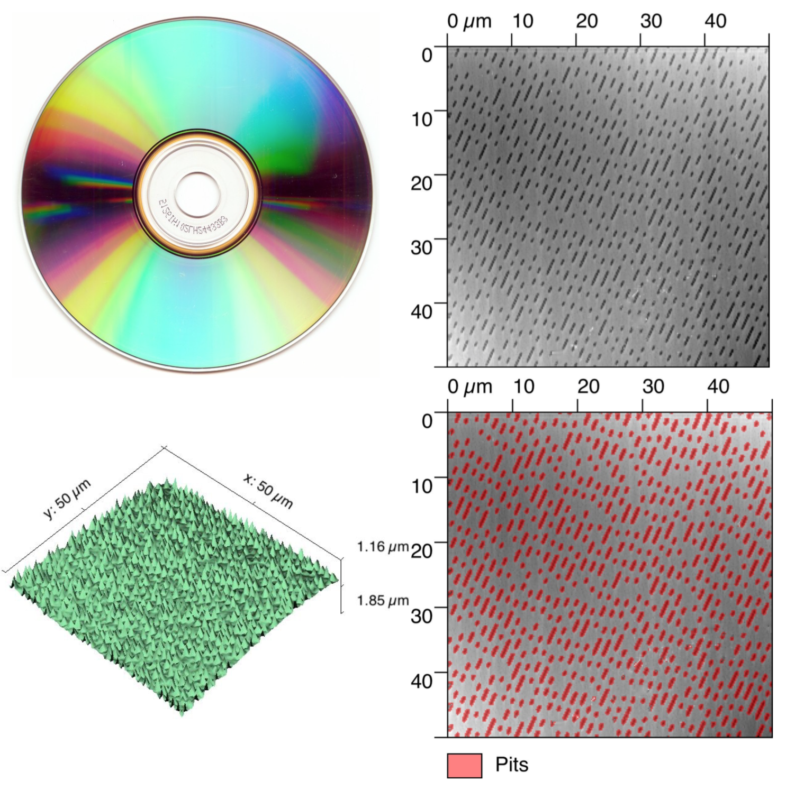
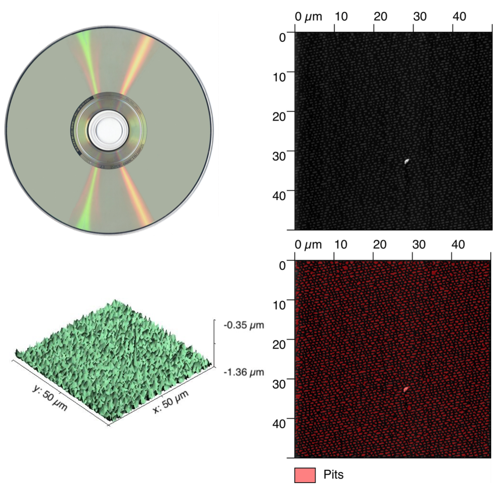
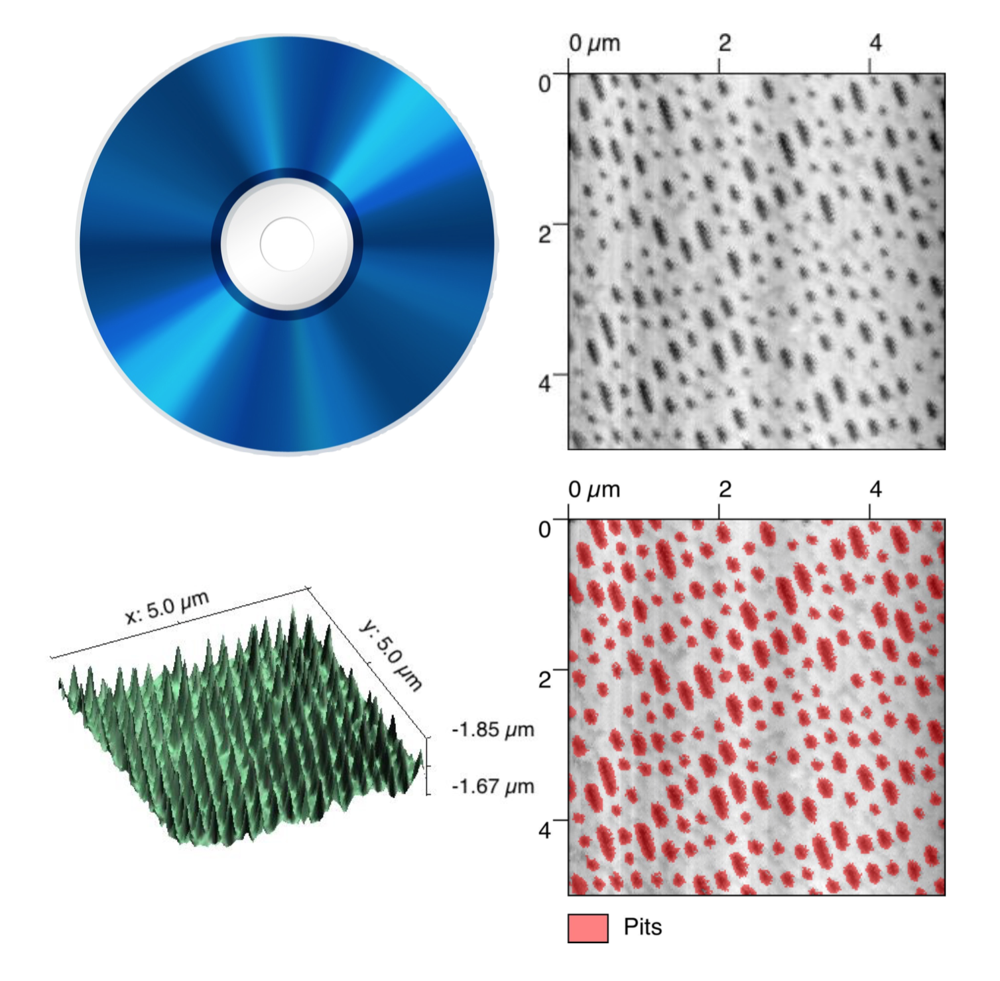

Xiaowen Zhang
University of Michigan 2015-2016 B.S.E ME
Shanghai Jiao Tong University 2012-2016 B.S.E ECE
Email: xwzhang[at]umich[dot]edu
Alternative Email: seanxwzhang[at]gmail[dot]com
Hi! My name is Xiaowen Zhang.
I'm a senior student in University of Michigan majoring Mechanical Engineeing (GPA: 4.00, graduate @ Apr. 2016). Go Blue!
I am also pursuing a B.S. in Electrical Computer Engineeing in Shanghai Jiao Tong University (GPA: 3.62, graduate @ Aug. 2016)
I am also applying for a master degree program in the United States.
I currently work at Eve by Eve's as a web developer.
My research interest in Mechanical Engineeing is mechatronic system design and non-linear dynamic system.
My interest in Computer Science is computer vision, robotics, and web technology.
You can click Research above to see my previous research projects and my publication.
You can click Projects above to see my previous engineering projects.
You can click Portfolio above to view or download my CV.
Click here to download my resume.
Thanks for viewing my homepage.
An Active Metastable Module for Adaptive Structure
Adaptive structure provides valuable versality for many engineering applications. Studying the synergistic effect of adpative mechanical behaviors of structures could give us insights in the potential application of such structures.
In this project, I independently proposed and developed an controlled adaptive module that is able to tune its own global stiffness onced invoked.
For more infomation about adaptive structure, click here and go to Prof. Kon-Well Wang's lab homepage.
Vibration Assisted Nanopositioning Stage
Nanopositioning stage is essential to high-precision engineering applications such as wafer scanner, Super-resolution (SR) Microscopy, Optical Tweezers, and Optical Traps. However, the nonlinear behavior of contact friction results in either a high cost of non-contact motion technology or an undesireble long setttling time.
In this project, together with Xin Dong and Lin Bo, we developed a nano-positioning stage using traditional roller bearings with piezo electric actuator to bring down the setttling time significantly.
For more infomation, please refer to Prof. Chinedum Okwudire's lab homepage
This paper has won the Best Oral Paper Award in ASPE, 2015.
Application of Atomic Force Microscopy on Multimedia Medium
The atomic force microscope (AFM) is one kind of scanning probe microscopes (SPM). SPMs are designed to measure local properties, such as height, friction, magnetism, with a probe. To acquire an image, the SPM raster-scans the probe over a small area of the sample, measuring the local property simultaneously.
AFMs operate by measuring force between a probe and the sample by exciting the probe via piezo electric actuator at a certain frequency and sensing its amplitude. The corresponding topology information of the surface is acquired by the reflection of the laser beam as shown on the right.
In this project, we used AFM to obtain the topology of three kinds of disks and reconstruct 3D images of that information. Analysis of the modulation methods of different multimedia mediums is then carried out to determine the opto-mechanical design requirements for multimedia players.
Course: ME495, University of Michigan
CD

DVD

Blueray

Little Computer 2000
Little Computer 2000 (LC2K) is a computer simulator that simulates a simple computer architecture consisting of an instruction set, an assembly code translator, a pipeline design, and a cahe design.
In this project, I implemented LC2K with add, nand, lw (load), sw (store), beq (branch), jalr (another branch), noop, halt instructions. I implemented a six-stage pipeline design with set-associative cache design. I also wrote an assembly code translator to convert assembly code to machine code.
Course: EECS370, University of Michigan
Vibration Assisted Nanopositioning Stage
Nanopositioning stage is essential to high-precision engineering applications such as wafer scanner, Super-resolution (SR) Microscopy, Optical Tweezers, and Optical Traps. However, the nonlinear behavior of contact friction results in either a high cost of non-contact motion technology or an undesireble long setttling time.
In this project, I used friction models such as Dahl, LuGre, GFM to simulate the setttling behavior of traditional roller bearing stage under various circumstances. I was also responsible for developing the prototype, i.e., drawing, machining, ordering and checking.
After building a working prototype, I identified the GMS model parameters by analyzing the frequency responses of the system and pinpointing the individual peaks. After that, we used Cascaded-PPI control scheme to control the stage with the piezo electric actuator providing dithering forces to the system.
To provide a better friction compensator than one based on GMS, I modified Professor Nilkhamhang’s research on adaptive friction compensators using LuGre model and added Particle Swarm Optimization to make the model results converge faster and with better friction prediction.
For more information about friction models, click here
Research project, navigate to Research for more information.
A Controllable Adaptive Module
Passive-adaptable mechanical properties enabled via multi- and metastable architectures provide valuable versatility for many engineering applications. Such features include stiffness and damping tunability, or dramatic shape change. However, few efforts have explored the potential for embedded actuation of such architectures. This project develops a compact, controlled, multistable module that actively switches between metastable states for intelligent properties adaptation.
The key idea in this project is to propose a structure that is both metastable and controllable, where metastable refers to the mechanical property of a strcutre that is able to have the same stiffness under different global deflection and the same deflection with different stiffness. Also, the structure itself should be modular so that it is able to be connected to other modules to have required adaptive mechanical properties with different configuration.
The structure I proposed consists of two bending plate and a series of connecting parts to transfer its torque. In the middle there is a coil spring to generate the variation of stiffness.
In developing the module, multiple prototyping techniques were used, including 3D printing, traditional machining, waterjet cutting, laser cutting, and silicone mold.
Research project, navigate to Research for more information.
FPGA with Nintendo Controller
This project aimed at connnecting Nintendo Controller with an Altera Cyclone FPGA Board and being able to read a certain combination of inputs from the controller to responde correspondingly.
To transfer data from the Nintendo Controller to the FPGA board, a series of Latch and Pulse signals were generated at a proper clock frequency， after which the controller status is transmitted to the FPGA board in real time. An "Easter Egg" is preset so that when a certain series of input is read, all the LEDs on the FPGA borad will flash.
The Cyclone IV FPGA board was also used, with Quartus, to build counters and simulator of traffic lights.
Course: EECS270, University of Michigan
Cigar Box - A Control System Interface
The cigar box shown on the right has two faders, three knobs, and three LEDs. It served as a tool for us to practice various control system designs with a insight in how different controllers would affect the performance of a certain task with physical limitations (i.e., physical limitations from hardwares).
During the project, we built controllers with Simulink program and used Arduino as the interface between controllers and the hardware. We practiced PID controller, lead/lag control design, designs via state space and frequence response, and so on.
The video on the right shows a simple control scheme applied to move the fader around with input gain from the knobs.
Course: ME461, University of Michigan
A Laser Reflecting Mechanism
While studying fundamentals of mechanical engineering, it can be difficult to visualize what we are learning about. Therefore, it is helpful to have hands-on access to concepts and ideas we might work with in the future. To gain practical experience working with four-bar linkages, motors and their accessories, and mechatronics, as well as a model-based design process, we were given a project to design, build, and test a device with all three of these components. We tried to emulate the design, manufacturing, and testing processes as close as possible to a process in how to solve a real-life engineering problem.
In building the prototype, we chose a belt design to mount the motor and encoder with the help of two extension springs. The inertia ration of different parts of the mechanism is matched to minimize the amount of torque needed.
Course: ME350, University of Michigan
Visualization of Sampling and Aliasing
Aliasing is an effect that causes different signals to become indistinguishable (or aliases of one another) when sampled (wikipedia). It would be an interesting topic for us to visualize the effect of aliasing by falshing light of varied frequencies on a series of water drips with a stroboscope.
A Rope Climbing Robot
This project is targetting at building a robot, or rather, a mechatronic system, that is able to climb up and down a rope at the fastest speed and stop at prescribed distance from the ground with limited weight, volume using singlechips like Arduino.
In this project, we carried out inertia matching to use the best motor-weight combination for the specific tasks and built a robot that won the second place out of 15 groups competing.
Course: Eng 100, Shanghai Jiao Tong University
Bike Touch System
A common problem which demands urgent solution for students in SJTU who ride bikes to class is that they lost their keys for bike locks often and the process of unlocking the bike with ordinary locks is annoying. We came up with a solution using capacitive touch panel to build a touch lock which doesn't entail a key at all.
The touch system uses 9 capacitive touch sensor for password input as well as one button for reset. The input password is then compared with the one in the Arduino memory which is constantly updated via GSM module, a communication module between singlechips and termnials like cellphones.
The touch system is able to alert the user if the number of wrong inputs reaches a certain value by sending messages to the user.
We also encapsulated the hardware (except for the touch panel under the seat) in a water-proof case to keep the system from rain.
Course: Eng 100, Shanghai Jiao Tong University